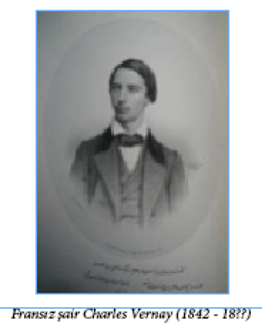

“RAMAZAN GELDİ HOŞ GELDİ,
BAKLAVA TEPSİSİ BOŞ GELDİ”
Çocukların Ramazanlarda eğlence olsun diye tekrarladıkları bu tekerleme Osmanlı padişahları için hayati bir önem taşıyordu. Çünkü Ramazanlarda saray tarafından her on yeniçeriye bir tepsi baklava hazırlanırdı. Her tepsi için iki yeniçeri gelir ve gümüş tepsiler içindeki baklavaları Yeniçeri ocağına götürürdü. Ertesi gün tepsiler üzerine örtülen peşkirle saraya geri gönderilirdi. Eğer baklava tepsileri “boş” gelirse, padişah için de ramazan “hoş” gelirdi. Tepsiler el değmeden gönderilmişse bu yeniçeri ocağının yönetimden memnun olmadığını ve tepkisini böyle ifade eylediğini gösteriyordu.
BÂB-I ÂLİ
20. yüzyıl boyunca daha çok Türk basınını simgeleyen bir ad olarak kullanılmasına rağmen Bâb-ı Âli (Yüce Kapı) 19. yüzyıl başından başlayarak kullanılmış, Tanzimat’a kadar vezirlere ikametgâh vazifesi de görmüştür. Tanzimat’ta sadece sadaret makamı olarak kalmıştır. Sultan II. Mahmut’a kadar “Bâb-üs safi” denilen bu yeri halk “Paşa Kapısı” olarak bilirdi. Halk dilinde “kapı” daima hükümet anlamında kullanılmıştır. Dilimizde uzun zamandır yerleşmiş olan “devlet kapısı” deyiminin kaynağı da budur. Babıâli adı Sultan II. Mahmut zamanında yerleşmiştir. Sadrazam Derviş Paşa’ya verilen konak, onun ölümünden sonra sadrazamların oturdukları bina haline gelmiştir. 1826’da yeniçerilik kurumu kaldırıldıktan sonra sadrazamların oturdukları yer olmaktan çıkmış ve tamamen resmi bir daire niteliği kazanmıştır. 1850-1870 tarihleri arasında Osmanlı İmparatorluğu’nun yönetim merkezi haline gelmiş, devletin bütün siyasi ve yönetim işleri buradan yürütülmüştür.
“YEDİ DÜVEL ZİNDANINDAN BETERDİR
YEDİKULE!”
Yedikule Zindanları ve idamların infaz edildiği Zindan Kulesi, Fatih Sultan Mehmet döneminden beri birçok mahkûmun son nefeslerini verdiği bir yerdir. Bizanslı mahkûmlardan Osmanlılara kadar birçok zavallının ölüm çığlıklarının duvarlarına sindiği bu korkunç kule, kapısından içeri adım atanın bir daha çıkamayacağını bildiği uğursuz ve korkunç bir zindandı. Sıradan bir Osmanlı vatandaşından, Padişah Genç Osman’a kadar nice zavallının kanını içen bu zindanda ilk idam edilen Osmanlı sadrazamı Çandarlı Halil Paşa’dan, son idam edilen sadrazam Benderli Ali Paşa’ya kadar birçok önemli kişinin ölümle buluşma noktası olmuştu.
Yedikule zindanlarından biri Bizanslılar döneminde tutuklular ve idam mahkûmları için kullanılırdı. Burada işkence aletleri, hücreler ve kuyular bulunmaktadır.
Osmanlılarda da mahkûmlar ve savaşta ele geçirilen elçiler için hapishane olarak kullanılmıştır. Ana kapının solunda bulunan mermer kulenin içinde “Kanlı Kuyu” adı verilen derin bir kuyu bulunmaktadır. Mahkûmlar bu kuyunun kenarında idam edilir ve başları kuyunun içine atılırdı. Kuyunun dibinde Marmara Denizi’ne açılan bir tünel bulunmaktadır. Kuyuya atılan başlar deniz sularının kuyunun dibine vurmasıyla denize sürüklenirdi. Bu kulenin orta katında biri küçük ve penceresiz, diğeri büyük iki oda vardı. Burada birçok siyasi tutuklu hapsedilmiş, Sultan II. Osman da Yedikule’de öldürülmüştür.
ESKİ İSTANBUL’DA ESNAF CEZALARI
Eski İstanbul’da mesleğinde yolsuzluk yapan esnafa en ağır cezalar hiç acımadan verilirdi. 1829 yılında Mısır Çarşısı kahveci esnafından Hacı Ali’nin dibeklenmiş halis Yemen kahvesine âdî kahve karıştırarak Yemen kahvesi diye sattığı tespit edildi. Dükkânı kapatılarak, kendisi Çanakkale’ye sürgün edildi.
Yine aynı yıl içinde bir çift pabucu narhından altmış para fazlasına satan kavaf Selim isminde biri de İstanbul’dan Bozcaada’ya sürülmüştür.
İmparatorluk merkezi olan İstanbul’da şehrin esnaf ve narh kontrolünü bizzat sadrazam ve İstanbul Kadısı yapardı. O dönemde kadıların bir görevi de Belediye Başkanlığı idi. Teftişe kalabalık bir maiyetle çıkarlar, yolsuzluklarını işittikleri, çıkardıkları malları ve terazilerini hileli ve bozuk ve dirhemlerini noksan buldukları esnafa hemen oracıkta cezayı verirlerdi. Dükkân kapatılırdı, bozuk ve dirhemi noksan şeylere el konulur, namussuz esnaf da servetine ve şöhretine bakılmadan hemen oracıkta, çarşılının ve komşularının gözü önünde falakaya yıkılır, bazen de bu meydan dayağından sonra sürgüne gönderilirdi.
OSMANLI DÖNEMİNDE BELEDİYE ZABITASI
II. Mahmut döneminin son yıllarında Belediye Teşkilatı kuruldu.
Eski tarih bilginlerimizden Mehmet Galip Bey ihtisap ağası23 Hüseyin Bey’in maceralarından örnekler verir:
23 İhtisap Ağası: Şimdiki ‘zabıta müdürü’ gibi bir görevi yapan belediye memuru.
“Şöhreti o derece imiş ki maiyetiyle sokağa çıktığında dükkân önü temizleyenlerin, delik ve deşik küfe ve tabla saklayanların, eksik okka ekmek gizleyenlerin haddi hesabı olmazmış… Kendisinden değil, gölgesinden ve isminden ürkmeyen esnaf yok gibi bir şeymiş…
Hüseyin Bey bir gün Eyüp’e giderken bir merkebe yüklü iki küfe ekmek görmüş… Tarttırmış, ekmeklerin bazıları noksan çıkmış… Derhal ekmek küfelerini ekmekçiye yükletmiş ve merkep samanını yiyinceye kadar herifi küfelerin altında bıraktırmış…
Aynı dönemde, başta Kavasbaşı İzzet Ağa bulunduğu halde kavaslar el pençe divan durup yirmi dört saatlik vukuat defteri okunurmuş. Defteri okuyan kâtip örneğin:
- Tavukpazarı’nda yorgancı Ahmet… Meyhane kapısından girerken çevrilmiş deyince, Hüseyin Bey kaba bir sesle haykırırmış:
- On beş gün!
- Kumkapı’da Palabıyık Serkiz, Raconcu Mıgır ile iskambil oynarken çıkan kavgadan Mıgır’ın kızarak bir gece evvel fenersiz balığa çıktığını haber veriyor…
Deyince:
- Bir ay!
- Firuzağa’dan Kırık Salih’in kahvesinde iskete Hakkı tezkeresiz karpuz satarken yakalanmış.
Deyince:
- “On gün!” diye hükmedermiş ve mahkûmlar derhal Eyüp Bahariyesi’ndeki iplikhaneye gönderilmiş…”
İplikhane, Tersane-i Âmire halatlarının büküldüğü büyük bir kışla ve imalathane idi. Ücretli amelesi bulunmakla beraber hapse mahkûm esnaf da cezalarını burada çalışarak çekerlerdi.
AVARIZ SANDIĞI
Eskiden her esnaf loncasının ‘Avarız Sandığı’ adı verilen bir yardım sandığı vardı. Her esnaf düzenli olarak her ay Avarız Sandığı’na bir miktar aidat yatırırdı. Bir esnafın dükkanı yandığı, yıkıldığı veya başına başka bir bela geldiği zaman derhal kendisine Avarız Sandığı’ndan çok düşük bir faizle ve uzun bir vade ile kredi verilir, böylece esnafın meslek hayatının bitmesi engellenirdi. Doğum, ölüm, kaza vb. beklenmedik masraflarla karşılaşan esnaf da Avarız Sandığı’na başvurup, yine aynı şartlarla kredi alabilirdi.
BOSTANCI FIRINI
Balıkhane Kasrı’na kapatılan son devlet adamı ise 1822’de azledilen Sadrazam Hacı Salih Paşa idi. İdamdan güç belâ kurtulmuştu. Mahkûmlar için “Balıkhane” korkunç bir kelime idi. “Götürün Balıkhaneye” sözü ölüm demekti. Bir diğer korkunç kelime ise “Bostancı Fırını” idi. Topkapı Sarayı birinci avlunun ziyarete kapalı kısımlarında bulunan fırının yanındaki küçük bir hapishaneydi burası. Burada infaz öncesi konuşturulmak istenen mahkûmlara işkence de yapılır ve bu işkencehane fırının hemen arkasında olduğu için buraya da ‘fırın’ denirdi. “Fırına götürün” demek işkence veya idam emri demekti. İdam edilecek kişiler haklarındaki ferman çıkana kadar Bostancıbaşı tarafından tutuklanmış olarak fırında beklerlerdi. Bostancıbaşı hapsinden sağ kurtulan da pek olmazdı. Balıkhane Kasrı ve Bostancı Fırını’ndan başka, borçlular Baba Cafer Zindanı’na, siyasî suçlular ve tutuklanan yabancı elçiler Yedikule Zindanları’na atılırdı.
DALKAVUKLUK ZOR ZANAAT !
Tanzimat’tan önceki devirde dalkavuklar kâhyaları, nizamnameleri ve narhları24 olan bir esnaf zümresi idi. Topkapı sarayı arşivinde I. Mahmut devrine ait, ancak kime hitap ettiği belli olmayan bir dilekçe bulunmuştur. Aşağıda bu dilekçenin günümüz Türkçesindeki halini okuyabilirsiniz:
24 Narh: Tüketiciyi korumak amacıyla, özellikle temel ihtiyaç maddeleri için resmî makamlarca belirlenen ve her yerde geçerli olan fiyat.
“Devletli, inayetli, merhametli efendim,
Kimsesiz dalkavuk kullarınızın arzuhalidir: Her sene Ramazan-ı Şerif geldiğinde, İstanbul’da davetli, davetsiz iftarlara gideriz; ulemanın, devlet büyüklerinin ve diğer büyüklerin, mevki sahiplerinin sofralarında çeşitli nefis yemekler, şerbetler, türlü türlü reçeller, tavukgöğüsleri, elmaspâreler,25 helvalar, kaymaklı baklavalar, ekmek kadayıfları, süzme aşureler, hoşaflar yer ve içeriz; üstüne göbek tütünü ve kahve ile ikram görürüz. Lâkin içimizde bazı terbiyesizler bulunup edebe uymayan hareket ve tavırlarıyla velinimetlerimiz efendilerimizi gücendirmekte, bunun zararı da hepimize dokunmaktadır. Dalkavukluk sağlam bir düzene bağlanmazsa hepimizin açlıktan öleceğimiz ortadadır. Kadîm26 düzen ve kanuna göre, yeniden bir düzene bağlanmasını, uygunsuzların içimizden kovulmasını, tavır ve hareketleri hepimizin makbulü olan Şakir Ağa’nın bize kâhya tayin olunmasını ve eline memuriyetini bildiren bir kıt’a ruhsatname verilmesini niyaz ederiz. Emir ve ferman devletli, inayetli efendim Sultanım hazretlerinindir.
25 Elmaspâre: 1. Elmas parçası, 2. Çok güzel veya lezzetli olan şey
26 Kadîm: Eskiden beri var olan.
Dalkavuk Kulları”
Bu belgenin altında da dalkavukların topluluktaki yerlerini ve davranış biçimlerini anlatan şu çok önemli açıklamalara yer verilmektedir:
“Dalkavuklar büyüklerinin huzuruna girdiklerinde, etek öperler. Oturacakları yer tırabzan yanındaki küçük minderdir. Görevleri mekan sahibi olan kişinin mizaç ve tabiatına uygun şekilde konuşmak, meclise neşe vermek, keder verici sözlerden, iğrenç sözlerden veya küfürlerden gayetle sakınmaktır. Hane sahibi ne söylerse fevkalâde yardakçılıkla onaylayacaklar ve asla kişinin aleyhine söz söylemeyeceklerdir. Verilen bahşişi gizlice alacaklardır, verilen paranın çokluğu ile meslektaşları arasında öğünmeyeceklerdir.”
Yine bu belgede bulunan “dalkavuk narhı”ndan, dalkavukluluğun sadece yardakçılık olmadığını, belli düzene, hatta fiyat tarifesine bağlı bir meslek olduğu görülmektedir. Dalkavukluk aynı zamanda da tehlikeli bir meslektir. Yapılacak çeşitli eğlencelere, maskaralıklara göre dalkavuklara ödenecek hizmet bedelleri de aynı listede şöyle belirtilmektedir:

• Dalkavuğun burnuna fiske vurma (fiske başına) = 20 para27
27 Para: O dönemlerde, 40 para = 1 kuruş olarak kabul edilmekteydi.
• Başına kabak28 vurma = 30 para
28 Kabak: Esrarkeşlerin kullandığı bir tür nargile.
• Yüzünü tokatlama (tokat başına) = 30 para
• Oturduğu minderden ve setten aşağı yuvarlama = 30 para
• Merdivenden aşağı yuvarlama = 180 para (bir yeri incinir, kırılırsa tedavi ve doktor parasını şakayı yapan verir.)
• Çıplak başına tokat atma (tokat başına) = 45 para
• Elinde beş on kıl kalmak ve dişlerini leylek gibi çatırdatmak şartıyla, sakalını tutup sarsmak = 60 para
• Sakal boyamasına = 60 para
• Sakalının yarısı veya cümlesi arpa boyunca kırkılırsa, şakayı yapan dalkavuğun üç aylık nafakasını verir. Bu nafaka ayda 30 kuruştan, 90 kuruştur.
• Dalkavuğun kafasına iri bir yumruk indirme (yumruk başına) = 40 para
• Ellerine ve ayaklarına domuz topu29 bağlama = 40 para
29 Domuz topu: Son zamanlarda “domuz bağı” yazılışıyla kullanılan bir bağlama yöntemi.
• Yüzüne mürekkep ve kömür ile kara sürme = 37 para
• Kuyruğu dışarıda kalmamak üzere bir fındık sıçanını ağzının içine kapatma = 400 para
• Sakız dolabına (bostan dolabına) 30 bağlanarak su içinde bir miktar durdurulmak şartıyla bostan kuyusunda bir döndürülmesine = 600 para (Bu şakada, birden fazla her döndürme için ayrıca 100 para verilir. Dalkavuk boğulur ölürse cenaze masrafı şakayı yapana aittir.)
30 Bostan dolabı: Sebze bahçesini sulamak için bir at bağlanarak diklemesine dönen kovalarla kuyudan su çıkarmaya yarayan dolap.
• Bir tarafının üzengisi olmayarak, haşarıca bir hayvana bindirilip seyretmekten hoşlanılırsa = 300 para
• Bir salkım üzümün sapı ile beraber yedirilmesi = 40 para.
Müverrih Peçevi İbrahim Efendi de dalkavuklara, şaklabanlara fevkalâde düşkün olan III. Murat’ın döneminde yaşanmış şöyle bir olayı aktarmaktadır:
“Maskaranın biri şenliğini ve maharetini gösterip de bahşişini alacağı sırada Sultan’a “Yok Hünkârım! Bugün altın istemem, yüz sopa yemek isterim” der. Padişah nedenini sorunca: “Hele ellisini vurdurun da o zaman sorun” der. Padişah emreder, maskarayı falakaya yıkarlar. Değnekler elli olunca herif: “Durun” der, “Bir ortağım vardır, ellisini de ona vurun!” Ortağının kim olduğunu sorarlar: “Beni her gün davete gelen Bostancı, Padişahımızın bahşişini alıp giderken: ‘Seni ben çağırdım, yarısı benimdir’ diye paranın yarısını elimden zorla alır, bugün de değneğin yarısı onun hakkıdır” der. Padişah gülmekten katılır, maskaraya her zamanki bağışının iki mislini verir, Bostancı’yı da elli değnek için falakaya yatırırlar…”
SARAYDA TASARRUF DEVRİ
Sultan Abdülmecit devrinde devlet yöneticileri arasındaki israf bir ara o boyuta varmıştı ki Sadrazam Mehmet Emin Ali Paşa’nın evinin aylık masrafı 4000 altını bulmuştu. Bu israf alışkanlığının nedeninin o günlerde Mısır’dan İstanbul’a göç eden ve zenginliklerinin hesabını bilmeyen bazı Mısırlı ailelerin aşırı para harcaması ve İstanbulluların da onlarla aşık atmaya kalkışması olduğu söylenmektedir. Sarayın harcamalarının da ucu iyice kaçmıştı. Sultan Abdülmecit sonunda dayanamayıp kızı Münire Sultan’a haber göndermiş ve açıkça “Akıllarını başına toplasınlar, artık aşırıp taşırdılar! Tekdir şöyle dursun, dayak attırırım!” demek zorunda kalmıştır.
OSMANLI’DA İLK HALK KONSERİ
1835 yılından itibaren Tamburî Aleksan Efendi adlı bir müzisyen tarafından Süleymanpaşa Hanı’ndaki bir kahvehanede ilk halk konserleri verilmeye başlanmış ve o zamana kadar ev meclisleri dışında müzik dinletisi görmemiş olan İstanbul halkı baştan yadırgasa da kısa sürede bu konserlere ilgi göstermişti.
OSMANLI NASIL ÇÖKERTİLDİ?
Osmanlı İmparatorluğu’nun çöküş döneminde yaşanan şu basit, ama anlamlı ve çok vahim durumlarla sonuçlanan olaylar zinciri, kendisinden başka hiç kimseyi düşünmeyen siyasetçilerin ve bürokratların devleti ne hale getirdiklerine çok küçük bir örnektir:
Sultan Abdülmecit 1 Temmuz 1839’da tahta çıktığında, Mısır sorunu 24 Haziran 1839’da alınmış olan Nizip yenilgisiyle iyice çıkmaza girmiş durumdaydı. Merhum padişah
II. Mahmut’un cenaze töreni sırasında başvekil Mehmet Emin Rauf Paşa’dan padişahın mührünü zorla alan Meclis-i Vâla-yı Ahkâm-ı Adliye Reisi Koca Mehmet Hüsrev Paşa
2 Temmuz 1839 günü kendini adeta zorla sadrazam ilân ettirdi.
Henüz Nizip bozgunundan haberi olmayan yeni padişah, sorunu kökünden çözmek için orduya ve donanmaya harekâtı durdurmaları için emir gönderdi. Devletin daha fazla yıpranmaması için de, Mısır Valisi Kavalalı Mehmet Ali Paşa’yı bağışladığını ve anlaşmak istediğini bildirmek üzere Köse Akif Efendi’yi Mısır’a yolladı. Sadrazam olan Koca Hüsrev Paşa o sırada Osmanlı donanmasının başında, Ege Denizi sularında seyretmekte olan Ahmet Fevzi Paşa’yı İstanbul’a geri çağırdı. Sadrazamla aralarında eskiye dayanan bir düşmanlık olan Ahmet Fevzi Paşa İstanbul’a ulaştığı zaman idam edileceğinden korktu ve Mısır’a sığınmaya karar verdi. Emrindekilerin çoğuna asıl amacını söylemeden, gemilerin tümünü Mısır’a yöneltti ve İskenderiye’de demirleyerek tüm donanmayı Kavalalı Mehmet Ali Paşa’ya teslim etti. Böylece daha on iki yıl önceki Navarin Deniz Savaşı’nda tamamen yok edilmiş olan Osmanlı donanması bir kez daha yok edilmiş oluyordu. O günlerde Nizip yenilgisinin haberi İstanbul’a ulaştı ve ardından da İngiltere, Fransa, Rusya, Avusturya ve Prusya verdikleri ortak bir notayla, Mısır sorununun kendilerine danışılmadan çözülmemesini istediler (27 Temmuz 1839). Bu nota mecburen kabul edildi. Böylece Osmanlı Devleti, Avrupa devletlerinin bir tür güdümü altına girmiş oluyordu. Donanmayı Kavalalı Mehmet Ali Paşa’ya teslim eden Ahmet Fevzi Paşa o tarihten sonra “Firari Ahmet Fevzi Paşa” veya “Hain Ahmet Paşa” olarak anıldı; ama arada olan, neredeyse tüm deniz gücünü kaybeden
Osmanlı Devleti’ne olmuştu…
İLK HRİSTİYAN OSMANLI ASKERLERİ
1847 yılına kadar Osmanlı’da Hristiyanlar askerlik yapmaz, onun yerine “cizye” adında bir maddi bedel öderlerdi. İlk kez 1747 yılında Yunanlılar askere alınmış ve denizcilik yapmaları düşünülmüştü. Aynı yıl tüm Hristiyan erkeklerin askerlik yapmaları zorunlu koşulduysa da, bu durum 1856 yılına kadar gerçekleşemedi.
ZİNCİRLE BAĞLANAN ARABALAR
Tanzimat ile başlayan Batılılık devrindeki İstanbul’un kibar hanımefendileri hakkında müverrih Cevdet Paşa II. Abdülhamit’e sunduğu “Maruzat” adındaki eserinde şu satırları yazıyor:
“Paşa ailesi, madamaları taklit ede ede ayda bir moda çıkarıp bunca namuslu kadını ayarttı, İslâm’ın ahlâkını bozdu. Bir gün, Sultan Abdülmecit Bâbıâli’ye gelmişti, gayet hiddetli idi, damat paşalara hitaben: “Sultanlar gece mehtaplarda gezer imiş. Benim gece mehtapta gezer kızım yoktur, hepsini reddedeceğim” diye bağırmıştı. Padişah saray kadınlarının kendisinden gizli arabaya binmemeleri için Serasker Rıza Paşa’ya emretmiş, o da Saray-ı Hümayun’daki arabaları zincirle birbirine bağlatmıştı!”
KOCA MEHMET HÜSREV PAŞA’NIN ÇOCUKLARI
Sultan Abdülmecit dönemi sadrazamlarından Koca Mehmet Hüsrev Paşa’nın önemli bir özelliği de, aralarında sonradan sadrazam olacak İbrahim Ethem Paşa’nın da bulunduğu yüz kadar çocuğu küçük yaşta (kimi zaman köle pazarından) evlatlık alarak yetiştirmiş olmasıdır. Çocukların çoğu ilerleyen yıllarda devlet içinde önemli mevkilere gelmişlerdir. Nitekim, 1827 yılında 27.000 asker sayısına ulaşan yeni Osmanlı ordusunun subay kadrosu içinde Koca Mehmet Hüsrev Paşa’nın 70-80 kadar evlatlığı çekirdek bir grup oluşturmaktaydı.
Aynı Koca Mehmet Hüsrev Paşa, Akdeniz Seferi sırasında Kuzey Afrika ülkelerinde gördüğü fesi Osmanlı’ya getirtmiş ve bu başlığı beğenen Sultan II. Mahmut 1832’de çıkardığı bir fermanla orduda fes takmayı zorunlu hale getirmişti. İşin ilginç yanı, orduda fesi zorunlu kılan II. Mahmut’un sarık yerine fesi getirdiği için “dinsizlik”le suçlanması gibi, 1925 yılında da fesi yasaklayan Atatürk’ün de aynı şekilde suçlanmış olmasıdır.
TANDIRLI KAYIK
19. yüzyıl müverrihlerinden Esat Efendi çok yaşlı olduğu halde, kışa rastlayan bayramlarda bayram tebriki için, kayığına tandır koydurtur ve saraydaki bayram tebriki merasimine giderdi. Protokole çok düşkündü ve kendisini unutturmak istemezdi.
KAŞIKÇI ELMASI’NIN
KAŞIKLARLA NE İLGİSİ VAR?
Türk tarihinin en ünlü ve değerli mücevherlerinden biri olan Kaşıkçı Elması’nın kökeni hakkında çeşitli hikayeler varsa da bunların hangisinin gerçek, hangisinin rivayet olduğu tarihin sis bulutları arasında saklı kalmaktadır.
18. yüzyıl Osmanlı vakanüvislerinden Mehmet Raşit Efendi’nin aktardığı hikaye albenisi açısından ilgi çekici görünse de gerçek olma olasılığı en düşük hikayelerden biridir:
1699 yılında İstanbul’da Eğrikapı çöplüğünde dolaşan baldırıçıplak takımından bir adam yuvarlak taş bulur. Bir yaymacı kaşıkçıya giderek taşı üç tahta kaşığa değişir. Kaşıkçı götürür, bu taşı bir kuyumcuya 10 akçeye satar. Kuyumcu taşı arkadaşlarından birine gösterir; kıymetli bir elmas olduğu anlaşılınca beriki sus payı ister. Aralarında kavga çıkar. Mesele Kuyumcubaşı’ya akseder. Kuyumcubaşı kavgacıların eline birer kese akçe vererek taşı alır. Fakat bu sefer de olayı sadrazam Köprülüzade Fazıl Ahmet Paşa duyar, taşı kendisi için satın almaya hazırlanırken, mesele padişaha kadar akseder. Dördüncü Mehmet bir Hatt-ı Hümayun ile elması Saray-ı Hümayun’a getirtir ve elmas saray elmastıraşına teslim edilir. Eğrikapı çöplüğünde bulunan taş işlenince ortaya 86 karatlık nadide bir elmas çıkar. Kuyumcubaşı’ya ‘Kapıcıbaşılık’ rütbesiyle, bir kese bahşiş ihsan olunur.
Dünyanın en büyük 22. elması kabul edilen ve bugün Topkapı Müzesi’nde sergilenen bu elmasa neden “Kaşıkçı Elması” denildiği hakkında muhtelif hikayeler varsa da bunların kaynağı, elmasın kesiminin oval olması ve dolayısıyla da kaşığa benzemesindendir. Elmasın Osmanlı Sarayı’na nasıl girdiği hakkındaki bilgi de, rivayetten öte değildir.
Bir başka rivayet de şöyledir:
1774 yılında Pigot adında bir Fransız subayı bu elması Hindistan’ın Madras Mihracesi’nden satın alıp Fransa’ya götürür. Bir zaman sonra tekrar satılığa çıkartılan elması Napolyon’un annesi satın alır ve uzun süre göğsünde taşır. Ne var ki Napolyon sürgüne gönderildiği zaman, annesi de oğlunu kurtarabilmek için elması mecburen satılığa çıkartır. İşte o sırada, Fransa’da bulunan Tepedelenli Ali Paşa’nın bir adamı, paşa adına 150.000 altın ödeyerek elması satın alır ve paşaya getirir.
Sultan II. Mahmut zamanında, Tepedelenli Ali Paşa devlete karşı ayaklandığı gerekçesiyle öldürülür, paşanın varlıklarına el konulur ve nesi var nesi yoksa Osmanlı hazinesine gönderilir. Böylelikle, Napolyon’un annesinden satın alınan “Kaşıkçı Elması” hazineye girmiş olur.
Kaşıkçı Elması’nın çevresini iki sırahalinde 48 adet küçük ve 1 adet de tepede büyük pırlanta kuşatmaktadır. 1 cm elmasın kütlesi 3,5 gr veya 17,5 karattır. Aşağıdaki resimde tam ortada görülen kocaman Kaşıkçı Elması’nın büyüklüğü ise 86/17,5 = 4.91 cm3 kadardır.
Bilimsel açıdan bakıldığında ikinci hikaye daha akla yatkın görünmektedir, ama ortada net bir kanıt olmadığı için ona da fazla itibar etmemek gerekir…
‘VAMPİR’ NASIL ‘CADI’ OLDU?
Cadılar, vampirler, hayaletler, hortlaklar vb. popüler kültürün en gözde, her zaman müşteri bulan figürleri olagelmişlerdir. Günümüzde, 21. yüzyılda bile bu konuları işleyen romanların, filmlerin hâlâ ciddi miktarda alıcı bulması, insanların bu ilgisinin kolay kolay sönmeyeceğine bir işarettir…
Osmanlı-Türk halk kültüründe her ne kadar daha çok Batı folklorunun figürleri olan cadı, vampir ve kurtadam gibi tipler olmasa da bizde de hayalet, hortlak, gulyabani, öcü, karakoncolos, yatır, ermiş vb. figürler bol miktarda bulunmaktadır. Vampirlik kavramının anavatanı olan Balkanlar’da yaşanan bir vampirlik hikayesini de bize Reşat Ekrem Koçu aktarmaktadır. Dikkati çeken nokta ise aslında ‘vampir’ olarak kullanılması gereken sözcüğün Koçu’da ve onu kaynak alan metinlerde ‘cadı’ olarak kullanılmasıdır. Biraz araştırdığımızda görüyoruz ki, bunun nedeni cadı kavramının bizde ‘hortlak’ yerine kullanılmasıdır.
Koçu “Tarihimizde Garip Vakalar” kitabında anlatıyor:
Bulgaristan’ın Türk idaresinde bulunduğu zamanlarda, Tırnava kadısı Ahmet Şükrü Efendi’nin İstanbul’a gönderdiği 1833 tarihli bir mektup devletin resmî gazetesi olan
Takvim-i Vekâyi’nin 69. sayısında da yayımlanmıştı. Bugünkü yazı dilimize çevirerek okuyalım:
“Tırnava’da cadılar türediği ve insanlara saldırdıkları haberleri üzerine, İslimye kasabasında cadıcılık ile tanınmış Nikola ismindeki adam Tırnava’ya getirildi ve 800 kuruşa pazarlık edildi. Bu adamın elinde resimli bir tahta vardı, mezarlığa gider, tahtayı parmağının üzerinde çevirir, resmi hangi mezara bakarsa, o mezardaki ruh habis31 imiş… Büyük bir kalabalık ile mezarlığa gidildi… Resimli tahtayı parmağında çevirmeğe başlayınca resim, sağlıklarında Yeniçeri ocağının kanlı zorbalarından olan Tetikoğlu Ali Alemdar ile Apti Alemdar denilen iki eşkıyanın mezarlarına karşı durdu… Mezarlar açıldı… Cesetleri yarım misli büyümüş, kılları ve tırnakları da üçer, dörder parmak uzamış bulundu… Gözlerini kan bürümüş, gayet korkunç idi. Mezarlıktaki bütün kalabalık bunu gördü… Bu adamlar, sağlıklarında her türlü kötülüğü yapmış, ırza, namusa, mala tecavüz etmiş, adam öldürmüş, ocakları ortadan kaldırıldığı zaman her nasılsa yaşlarına hürmet edilerek cellâda verilmemiş, sonradan ecelleriyle ölmüşlerdi… Sağlıklarında yaptıkları yetişmemiş gibi şimdi de halka kötü ruhlar olarak musallat olmuşlardı… Cadıcı Nikola’nın tarifine göre bu gibi kötü ruhları defetmek için cesetlerinin göbeğine birer ağaç kazık çakılır ve yürekleri kaynar su ile haşlanır imiş… Ali Alemdar ile Apti Alemdar’ın cesetleri mezarlarından çıkarıldı… Göbeklerine birer ağaç kazık çakıldı ve yürekleri bir kazan kaynar su ile haşlandı, fakat hiç etki etmedi. Cadıcı “Bu cesetleri yakmak lazım” dedi. Bu hususta dinen de izin verilebileceğinden ruhsat verildi ve iki Yeniçerinin mezarlarından çıkarılan cesetleri mezarlıkta yakıldı ve çok şükür kasabamız cadı şerrinden kurtuldu…”
31 Habis: Kötü yaradılışlı, alçak, pis vb.
ASAKİR-İ MANSURE-İ MUHAMMEDİYE
Yeniçeri Ocağı kaldırıldıktan sonra yerine kurulan Asakir-i Mansure-i Muhammediye (Muhammet’in Muzaffer Askerleri) ordusuna mensup askerlerin halktan ayırt edilebilmesi için başlarına serpuş yerine şal sarılmış ve ellerine de birer sopa verilmişti.
KIZ MI OLDU, OĞLAN MI?
Meşrutiyet’in ilanına kadar, Beyazıt Yangın Kulesi’nde gece gündüz nöbet bekleyen gözcüler vardı. Bunların reisine “Kule Ağası” adı verilirdi. Kule Ağası gece gündüz kulede yaşamak zorunda olduğu için, mutlaka bekârlar arasından seçilirdi. Geceleri bir yerde yangın çıktığı zaman nöbetteki bekçi ateşi görür görmez önce kule ağasını uyandırır ve “Kalk ağa, kalk! Bir çocuğun oldu!” diye seslenirdi. Uyanan ağa da ona “Kız mı? Oğlan mı?” diye sorardı. Nöbetçi “kız” derse, yangının Üsküdar, Boğaziçi sahili veya Beyoğlu’nda bir yerde çıktığı; eğer “oğlan” derse, yangının İstanbul’un tarihi yarımadası içinde (o zamanlar sadece o bölgeye “İstanbul” denirdi) bir yerde çıktığı anlaşılırdı.
FRANZ LIZST İSTANBUL’DA

1847 yılında İstanbul’a gelen ünlü besteci Franz Lizst kendisi de sanata çok meraklı olan Sultan Abdülmecit’in huzurunda piyano çalmış ve Donizetti Paşa’nın (Giuseeppe Donizetti) bestelediği Mecidiye Marşı’nı seslendirmişti. Giuseppe Donizetti’nin Abdülmecit’in babası II. Mahmut için bestelediği “Mahmudiye Marşı” on bir yıl, Sultan Abdülmecit için bestelediği “Mecidiye Marşı” da (1839) tam yirmi iki yıl boyunca Osmanlı Devleti’nin ulusal marşı olarak çalınmıştır.
KAĞIT KADAR DEĞERİ OLMAYAN KAĞIT PARA
1848 yılında, Sultan Abdülmecit döneminde piyasaya sürülen ilk kağıt para 500 kuruş değerindeydi, ama çok istisnai bazı özelliklere sahipti. Şöyle ki:
• “Kaime-i Mutebere-i Nakdiyye” adını taşıyordu ve uzun yıllar Türkçede kullanılan “kayme” sözcüğü bu addan türemedir,
• Tamamen elle yazılıp hazırlanıyorlardı,
• Elle yazılı olduklarından çok kolay taklit edilebiliyorlardı,
• Piyasadaki tüm “kayme”lerin değeri toplam 160.000 lira idi,
• % 8 faiz vermekteydiler,
• Türk halkı sert ve madeni paraya alışık olduğu için, ilk kağıt paraları hiç sevmedi ve uzun süre ısınamadı,
• Devletin faizlerini zamanında ödememesi ve bazı kuruluşların (hatta devlet kuruluşlarının) kağıt parayla madeni parayı aynı değerde kabul etmemesi yüzünden, kağıt paralar değerini hızla kaybetti,
• Kurtuluş Savaşı bittiğinde, Osmanlı’dan genç Türkiye Cumhuriyeti’ne artık hiçbir değeri olmayan tam 158.750.000 TL kağıt para devredilmişti…